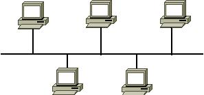
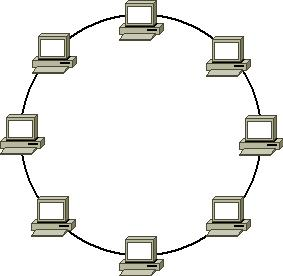
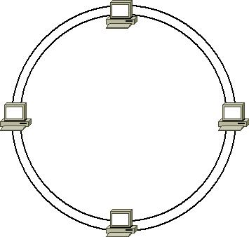
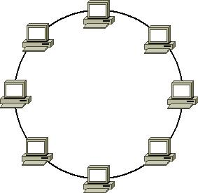
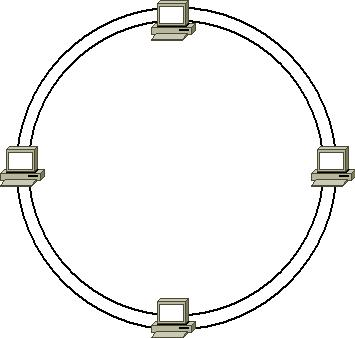
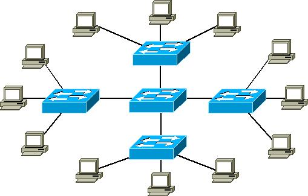
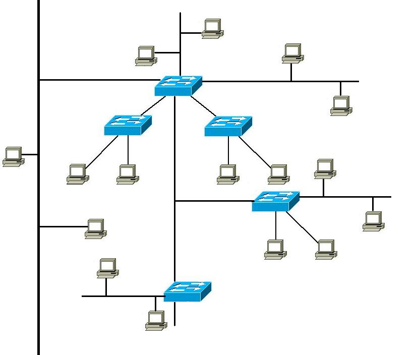
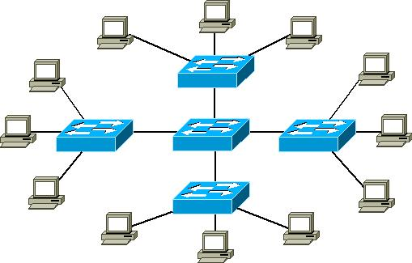
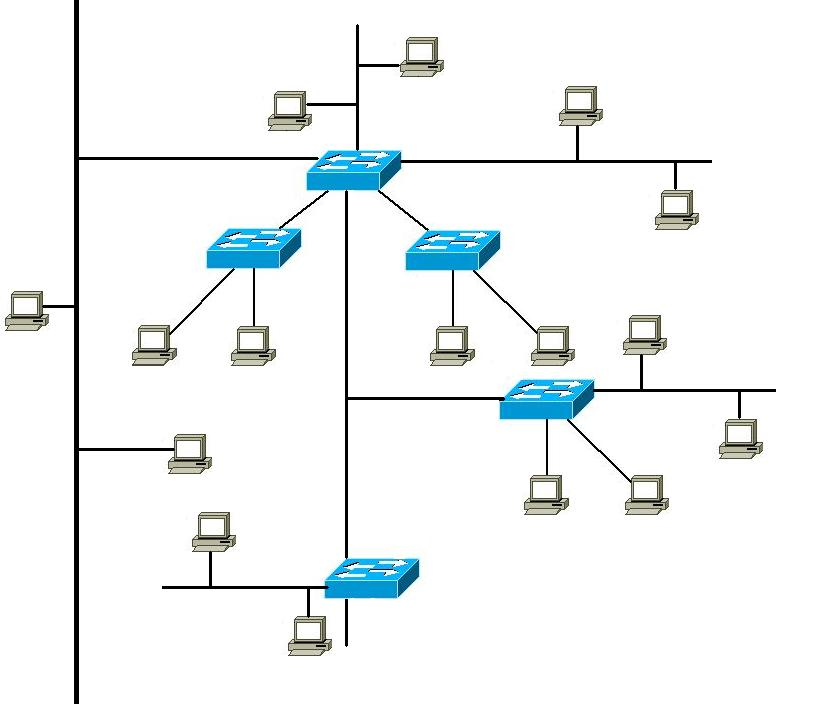

Topologie sieci.
Topologia sieci komputerowej – model układu połączeń różnych elementów (linki, węzły itd.) sieci komputerowej. Określenie topologia sieci może odnosić się do konstrukcji fizycznej albo logicznej sieci.
Topologia fizyczna opisuje sposoby fizycznej realizacji sieci komputerowej, jej układu przewodów, medium transmisyjnych. Poza połączeniem fizycznym hostów i ustaleniem standardu komunikacji, topologia fizyczna zapewnia bezbłędną transmisję danych. Topologia fizyczna jest ściśle powiązana z topologią logiczną np. koncentratory, hosty.
Topologia logiczna opisuje sposoby komunikowania się hostów za pomocą urządzeń topologii fizyczej.
Topologie logiczne:
1. Topologia magistrali – wszystkie elementy sieci podłączone są do jednej magistrali. Obecnie stosowana do łączenia urządzeń w topologii punkt-punkt.
2. Topologia liniowa – odmiana topologii magistrali, w której każdy element sieci połączony jest dokładnie z dwoma sąsiadującymi elementami. 3. Topologia pierścienia – poszczególne elementy są połączone ze sobą w taki sposób jak w topologii liniowej, a dodatkowo połączone zostały elementy graniczne tworząc zamknięty pierścień.
4. Topologia podwójnego pierścienia – odmiana topologii pierścienia, w której poszczególne elementy połączone są ze sobą dwoma przewodami, co pozwala na utworzenie dwóch zamkniętych pierścieni.
5. Topologia gwiazdy – elementy końcowe są podłączone do jednego punktu centralnego, koncentratora lub przełącznika. Stosowana do łączenia urządzeń za pomocą skrętki lub kabla światłowodowego. Każdy pojedynczy kabel jest używany do połączenia z siecią dokładnie jednego elementu końcowego.
3. Topologia pierścienia – poszczególne elementy są połączone ze sobą w taki sposób jak w topologii liniowej, a dodatkowo połączone zostały elementy graniczne tworząc zamknięty pierścień.
4. Topologia podwójnego pierścienia – odmiana topologii pierścienia, w której poszczególne elementy połączone są ze sobą dwoma przewodami, co pozwala na utworzenie dwóch zamkniętych pierścieni.
5. Topologia gwiazdy – elementy końcowe są podłączone do jednego punktu centralnego, koncentratora lub przełącznika. Stosowana do łączenia urządzeń za pomocą skrętki lub kabla światłowodowego. Każdy pojedynczy kabel jest używany do połączenia z siecią dokładnie jednego elementu końcowego. 6. Topologia gwiazdy rozszerzonej – odmiana topologii gwiazdy, posiadająca punkt centralny i punkty poboczne – jedna z częściej stosowanych topologii fizycznych Ethernetu.
7. Topologia hierarchiczna – zwana także topologią drzewa, jest kombinacją topologii gwiazdy i magistrali, może być także postrzegana jako zbiór sieci w topologii gwiazdy połączonych w strukturę hierarchiczną (drzewiastą).
8. Topologia siatki – elementy łączą się bezpośrednio, dynamicznie i niehierarchicznie z jak największą liczbą innych elementów i współpracują ze sobą w celu efektywnego trasowania danych. Sieć w topologii mesh pozwala na dynamiczne samoorganizowanie się i samokonfigurowanie. Rozwiązanie często stosowane w sieciach, w których wymagana jest bezawaryjność.
6. Topologia gwiazdy rozszerzonej – odmiana topologii gwiazdy, posiadająca punkt centralny i punkty poboczne – jedna z częściej stosowanych topologii fizycznych Ethernetu.
7. Topologia hierarchiczna – zwana także topologią drzewa, jest kombinacją topologii gwiazdy i magistrali, może być także postrzegana jako zbiór sieci w topologii gwiazdy połączonych w strukturę hierarchiczną (drzewiastą).
8. Topologia siatki – elementy łączą się bezpośrednio, dynamicznie i niehierarchicznie z jak największą liczbą innych elementów i współpracują ze sobą w celu efektywnego trasowania danych. Sieć w topologii mesh pozwala na dynamiczne samoorganizowanie się i samokonfigurowanie. Rozwiązanie często stosowane w sieciach, w których wymagana jest bezawaryjność. Topologie logiczne:
1. Topologia rozgłaszania – polega na tym, że host wysyła dane do wszystkich innych hostów podłączonych do medium (zob. protokół CSMA). Kolejność korzystania z medium według reguły „kto pierwszy wyśle, pierwszy zostanie obsłużony” (ang. first come, first serve). Przykładem są tutaj sieci Ethernet.
2. Topologia przekazywania tokena (żetonu) – polega na kontrolowaniu dostępu do sieci poprzez przekazywanie elektronicznego tokena. Host, który w danym momencie posiada token, może skorzystać z medium. W przypadku, gdy nie ma już zadań do wykonania przekazuje token kolejnemu hostowi i cykl się powtarza:
Topologie logiczne:
1. Topologia rozgłaszania – polega na tym, że host wysyła dane do wszystkich innych hostów podłączonych do medium (zob. protokół CSMA). Kolejność korzystania z medium według reguły „kto pierwszy wyśle, pierwszy zostanie obsłużony” (ang. first come, first serve). Przykładem są tutaj sieci Ethernet.
2. Topologia przekazywania tokena (żetonu) – polega na kontrolowaniu dostępu do sieci poprzez przekazywanie elektronicznego tokena. Host, który w danym momencie posiada token, może skorzystać z medium. W przypadku, gdy nie ma już zadań do wykonania przekazuje token kolejnemu hostowi i cykl się powtarza: